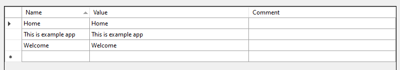

LTR - LocalizablesToResx
LocalizablesToResx is a simple tool, which is used to acquire localized strings within .razor files and automatically generate .resx file based on these strings. This tool intends to simplify creation of .resx files from .razor files.
Example
Let's have following .razor file with localized strings
<h1>@Localizer["Home"]</h1>
<p>@Localizer["Welcome"]</p>
<p>@Localizer["This is example app"]</span>
We can call this script:
ltr -f test.razor -o test.resx
Following resx file will be generated:

Installation
dotnet tool install AXSharp.ltr --prerelease --local
Parameters
This cli tool can be used with following parameters:
- -i (--identifier)
- identifier which represent localizer, which is used to locate localized strings (default is
Localizer) - not required
- identifier which represent localizer, which is used to locate localized strings (default is
- -o (--output)
- output resx file
- mandatory
- -f (--file)
- source file, where localized string are located
- not required if -d is present
- -d (--directory)
- source directory, which files are enumerated and localized string are then located
- not required if -f is present